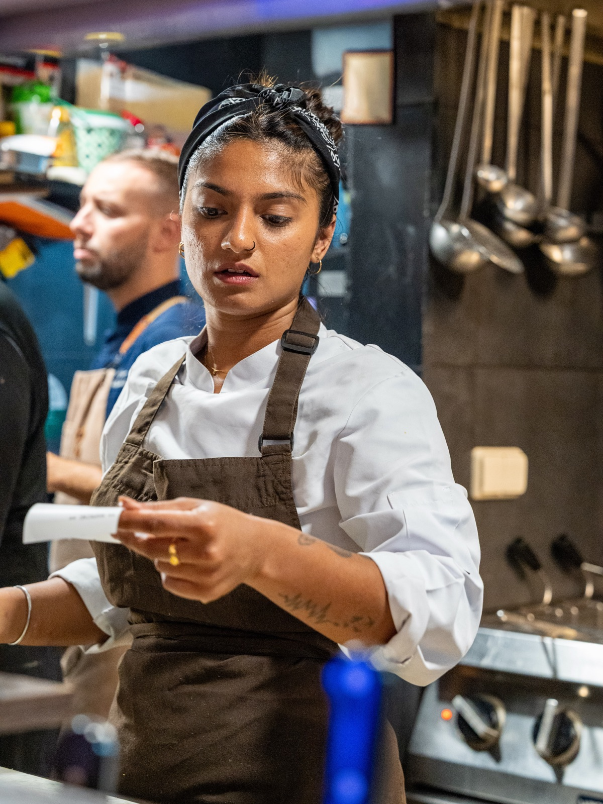
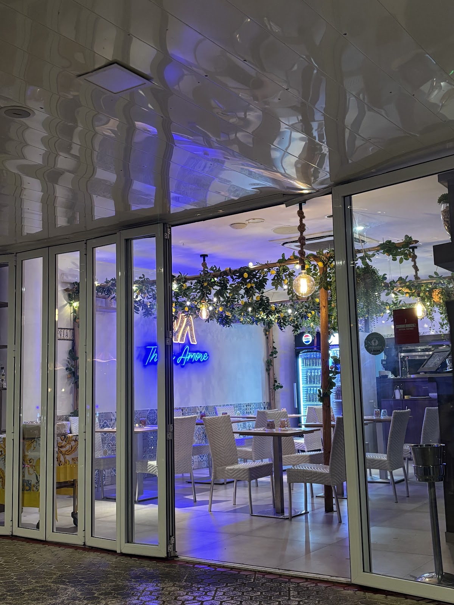
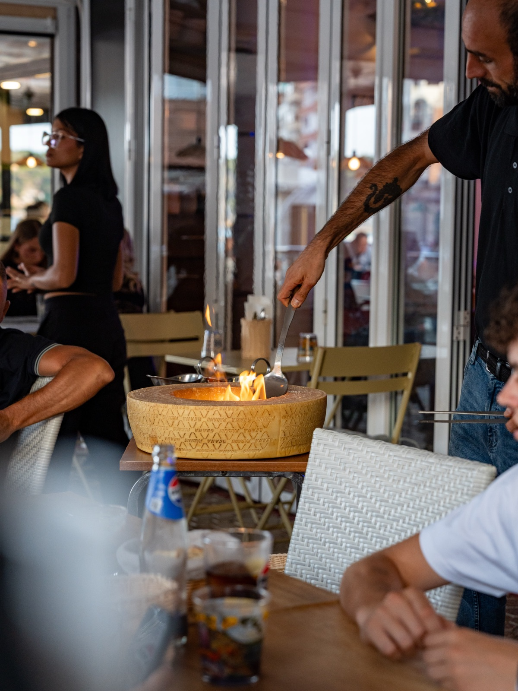

Cucina napoletanaLloret de MarMayo — Octubre
Un pedacito de Italia en Lloret de Mar. Cocina del sur, pasta hecha en casa y una terraza para alargar la sobremesa.
- 4,6Google
1.620 reseñas - 9,3TheFork
522 opiniones
I
Un restaurante italiano-mediterráneo basado en la comida tradicional del sur de Italia, que innova con combinaciones de sabores que jamás has probado. Como nuestras abuelas, preparamos la pasta en casa.


II
Le paste classiche
¿Carbonara, amatriciana
o cacio e pepe?
Las tres de nuestro Instagram, de la cocina a la mesa. Elige una y mira cómo sale.

III
La carta · de Positano a Nápoles
Un viaje por
la costa.
Sigue bajando: la Vespa recorre la carta
IV
Galleria · @viaamalfi_lloret
Del Instagram
a la mesa.
01 / 12
V
Reels
Cocina abierta.
VI
Opiniones
VII
Prenota
Te guardamos
la mesa.
—
Temporada de mayo a octubre · Para llevar y catering bajo petición.
Carrer de Josep Tarradellas, 1-3, local 917310 Lloret de Mar · Girona